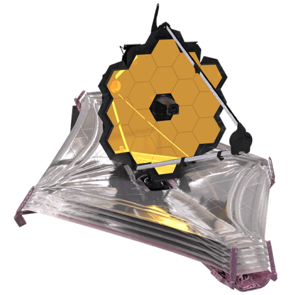

JAMES WEEB
em busca do desconhecido
O satélite espacial James Webb é uma notável conquista da engenharia espacial, representando um marco na exploração do cosmos. Equipado com instrumentos avançados, ele promete revolucionar nossa compreensão do universo, permitindo observações mais detalhadas e precisas do espaço profundo.
Com uma missão dedicada à investigação de objetos celestes primordiais, o James Webb está destinado a desvendar mistérios cósmicos e proporcionar insights inéditos sobre a origem e evolução do universo.